A SaaS-style partnership film in the Minimal Gradient SaaS look, built from both brands: WKConversions' blue glowing in from one side, bFound's indigo from the other. Two glass tiles linked by a cable carry the story: the film WKConversions made for bFound, the response it got on LinkedIn, the €1,000 that keeps most businesses out, the lock both partners open together, and the code BFOUND50 typed into the contact form as it is spoken: €400 becomes €200.
A frame per phrase, taken from the finished film. Times are seconds into the film; the picture leads each spoken word by about four frames.
WKConversions' tile and bFound's part from one point and a cable links them; on 'more than great work' the work itself (the film WKConversions made for bFound, its own frame) grows out of the link and rings go out from it, below the line.
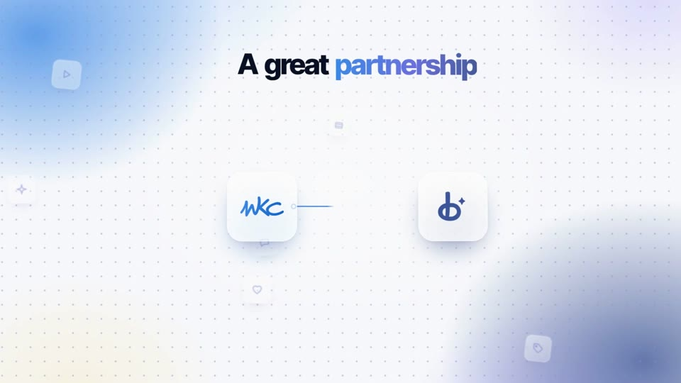
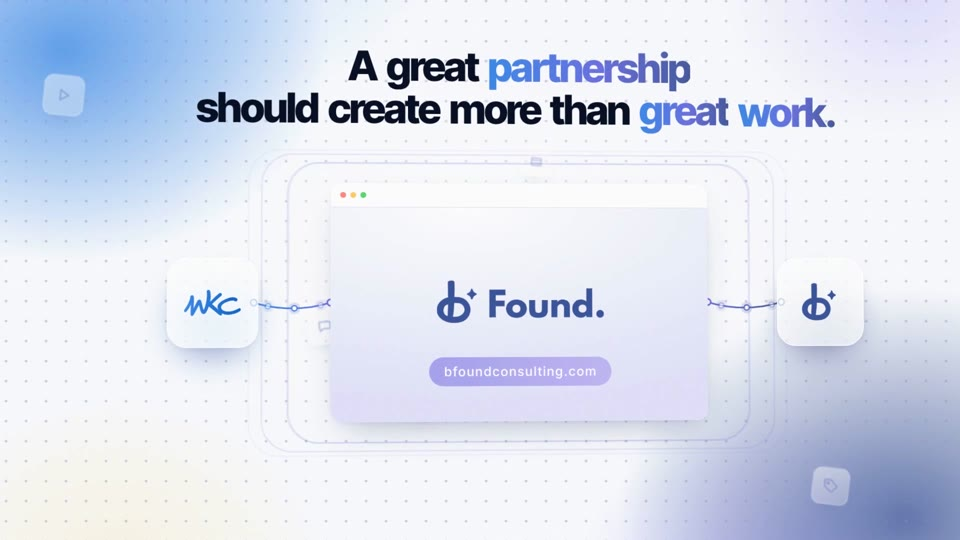
The window moves to the maker; a timeline appears and its playhead builds the film (b-mark, Found., the url pill) keyframe by keyframe; on 'for bFound' the finished film travels along the cable into bFound's tile, which takes a check.
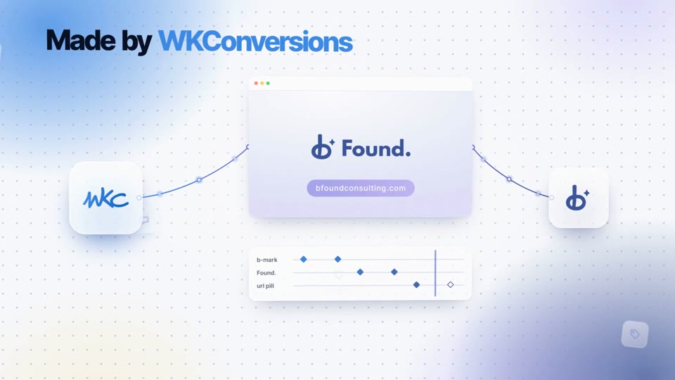
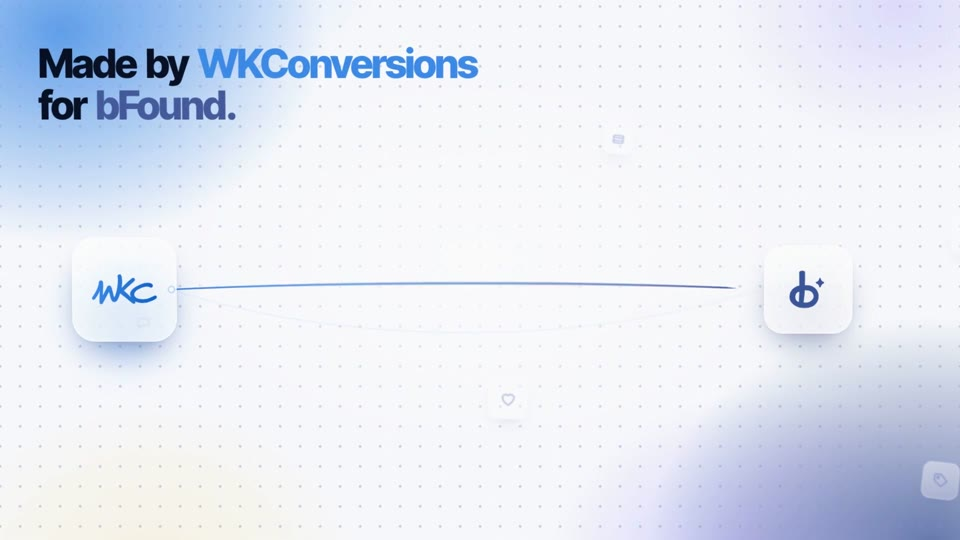
bFound's tile opens into the LinkedIn post by its founder, with the film in it; comments stream in (anonymous: gradient discs and skeleton lines, never a name or face), the reactions climb to 118 and the comments to 45, and the video comes forward and plays.
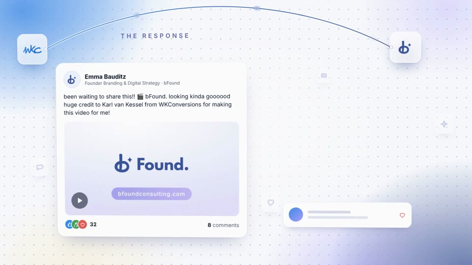
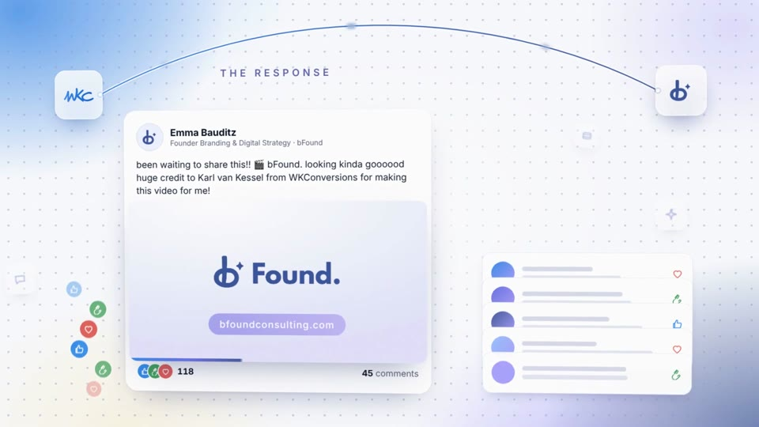
The typical price sharpens into focus as €1,000 / video on the spoken number, over a professional motion design video; the card shrinks onto a glass wall's lock, and six small businesses reach for it and stop at the wall.
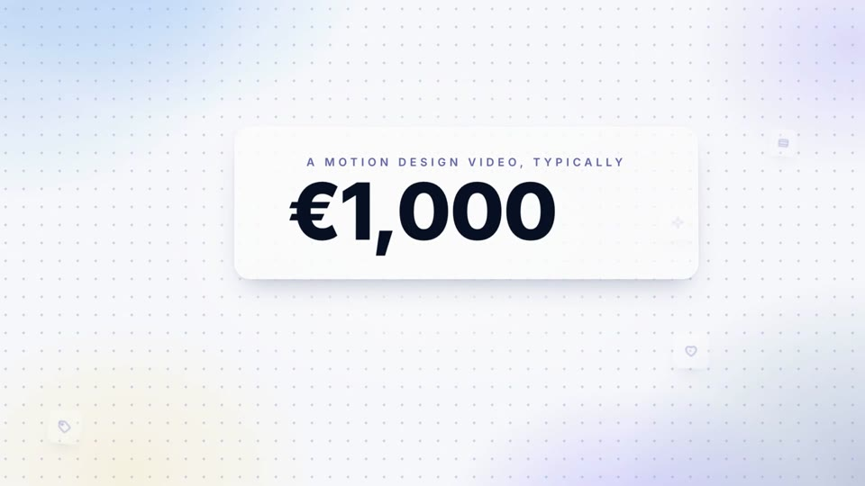
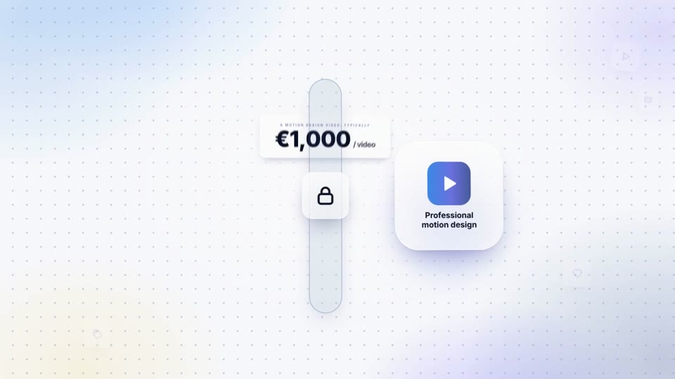
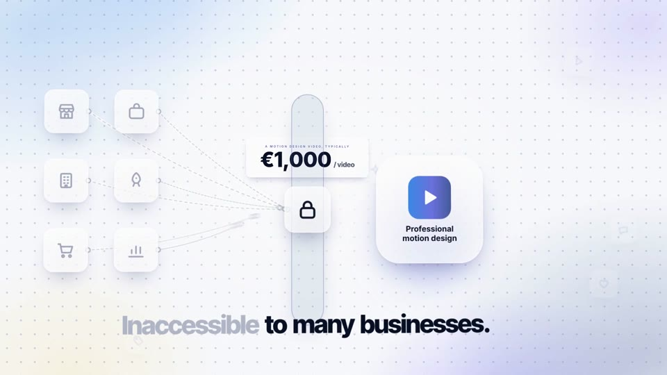
WKConversions' tile comes in, then bFound's; both cables pull on the lock, the €1,000 on it is struck, the lock opens, the wall falls and the businesses connect to the video.
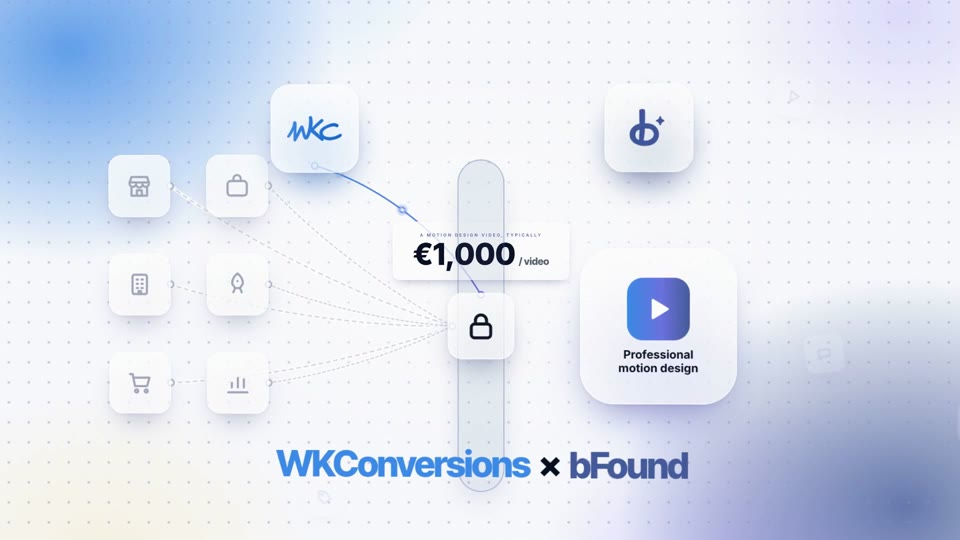
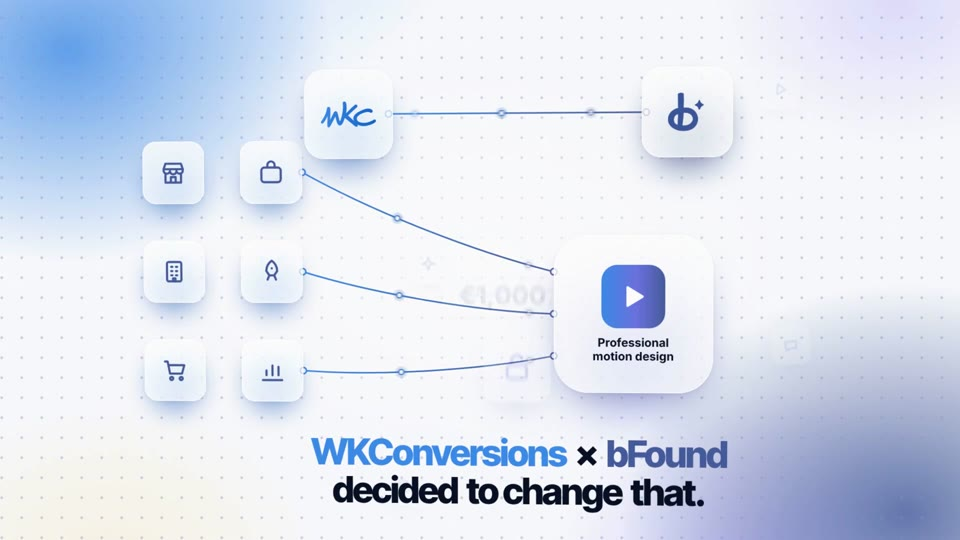
Both tiles feed the referral-code field; BFOUND50 is typed letter by letter exactly as it is spoken and the field takes a check; '50% off our startup price.' builds word by word, then €400, the WKConversions startup price.
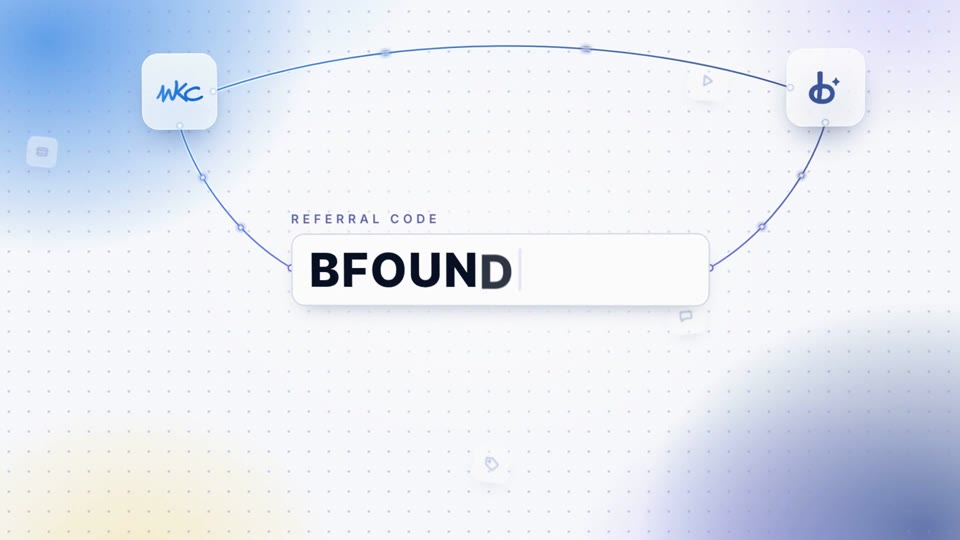
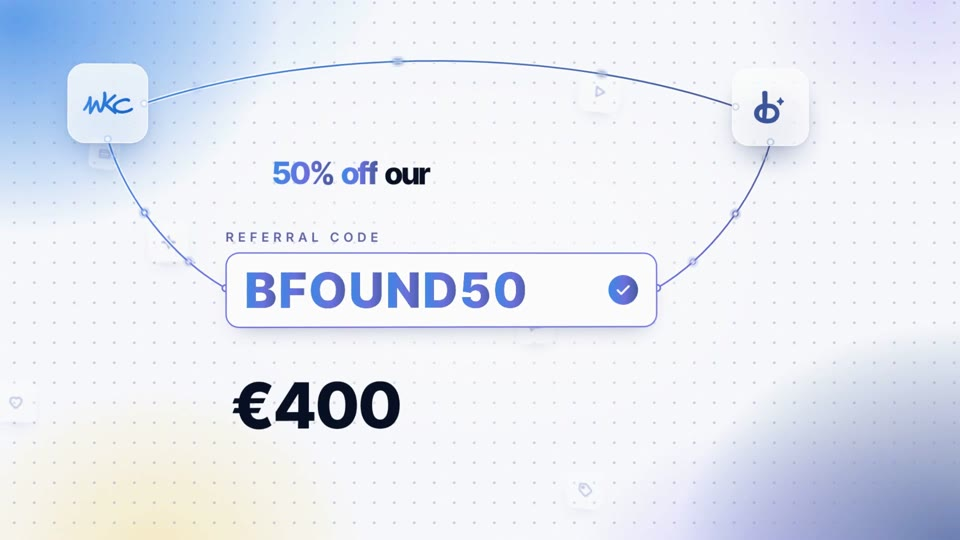
The code field travels into the contact form as the page opens; wkconversions.com/contact rises big above it on the words; on 'for €200' a tag grows out of the form: €400 struck, €200 with BFOUND50; then the cursor presses Submit.
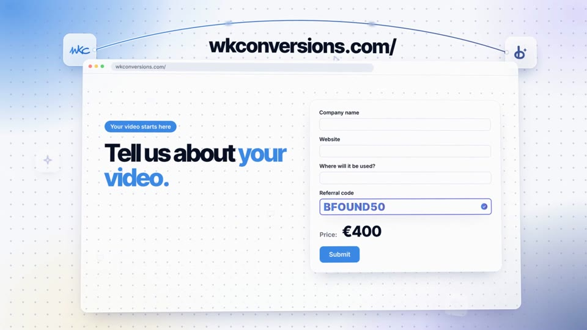
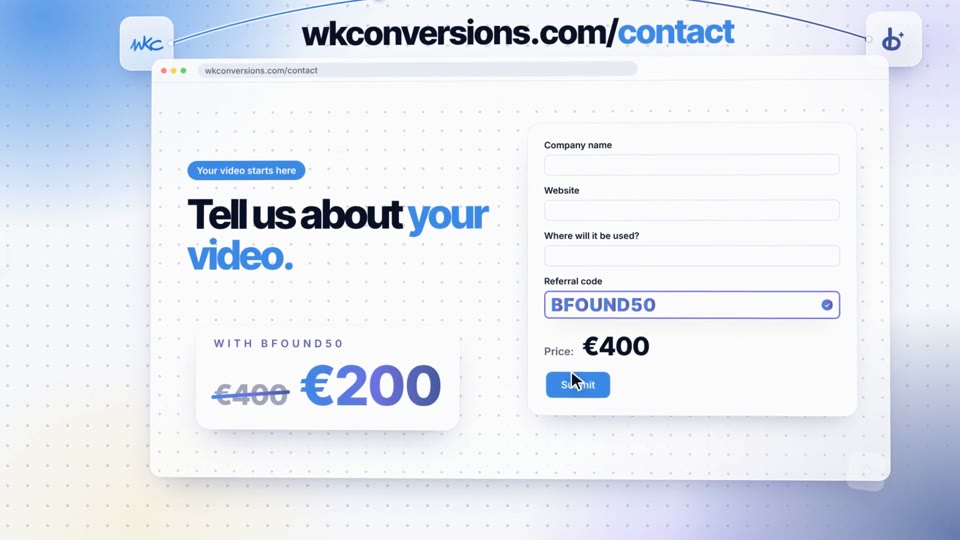
The two tiles part from one point with their names under them (WKConversions, bFound's own logo) and an × between them, the cable drawing between them; the code BFOUND50 and where to claim it; the cable keeps pulsing and the stage keeps floating.
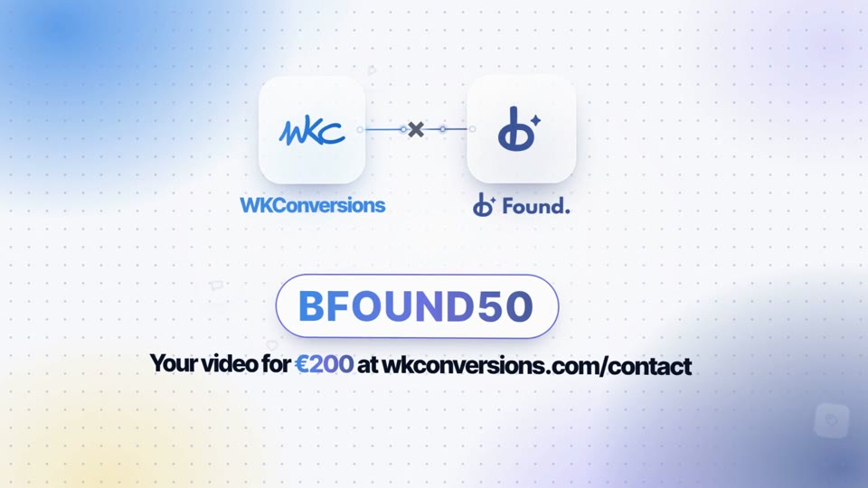
| Before | After | Why |
|---|---|---|
| The camera's chapter push snapped back 3% in one frame | The push eases out over 0.8 s as the next begins | Review blocker (lurch at every chapter) |
| The finished bFound film blinked out and the window sat empty | It dissolves into its draft and is rebuilt along the timeline across the whole phrase | Review: one-frame cut, 1.8 s empty |
| €1,000 counted up through wrong prices (€200, €400 included) | €1,000 sharpens into focus on the spoken number, then hangs on the lock and is struck when the partners open it | Truth and 'changed that' paid off |
| The form's price rolled to €200 after Submit | The form keeps its €400; a €200 tag grows out of the code's check, then Submit | The live form isn't known to recalculate; cause before effect |
| The spoken address was 16-px text in the bar | wkconversions.com/contact types itself big above the page, on the words | Legibility of the CTA |
| Tiles flew in from off-screen; the code field cross-faded into the form | Tiles part from one point and leave by shrinking where they stand; the field travels into the form's slot | Smoothness, carry don't duplicate |
| The response beat piled up (comments, floaters over the 118) | Six opaque comments, eight reactions left of the card, counts from the response | Clear before busy |
| End card without the partners' names, a close-button × | WKConversions and the bFound logo under the tiles, a plain × | The partnership must read on the last frame |